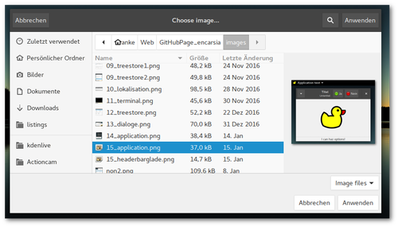

Das Konfigurationssystem GSettings
Inhalt
Das GNOME-eigene Konfigurationssystem GSettings
GSettings ist GNOMEs zentrales Konfigurationssystem für Anwendungen. Es ist die Schnittstelle für verschiedenmögliche Backends, gemeinhin ist dies dconf.
Mittels grafischem (dconf-editor) oder Kommandozeilentool (gsettings) lassen sich Konfigurationen abfragen und manipulieren.
Das folgende Beispiel kann Hintergrundbilder laden, festlegen und bookmarken/favorisieren.

Schemas
Um eine Konfiguration für eine Anwendung zu erstellen, muss diese in einer Schema-Datei definiert werden. Diese Datei ist eine XML-formatierte Datei, die anschließend in sein maschinenlesbares Äquivalent überführt werden muss.
Ein Beispiel für eine Schema-Datei mit einer festzulegenden Eigenschaft (key) wäre etwa:
<schemalist> <schema id="org.gtk.Test" path="/org/gtk/Test/"> <key name="string-key" type="s"> <default>""</default> <summary>A string</summary> <description> Configuration key defined for a string. Default value is set to an empty string. </description> </key> </schema> </schemalist>
Die Dateibenennung folgt der Vorgabe "schema.id.gschema.xml". Das Standardinstallationsverzeichnis für Schema-Dateien ist /usr/share/glib-2.0/schemas. Schema-Dateien können auch außerhalb dieses Verzeichnisses genutzt werden (z.B. lokal, zu Testzwecken), sie werden dann aber nicht vom dconf-editor angezeigt.
Die erforderliche Kompilierung erfolgt mit
glib-compile-schemas /path/to/schema/files/ #default directory glib-compile-schemas /usr/share/glib-2.0/schemas/
Die kompilierte und nun von GSettings verwendete Datei ist gschemas.compiled.
Glade
Das Beispiel soll Bilder anzeigen, dafür wird das Widget GtkImage benötigt. Alle Steuerungselemente werden in der Headerbar untergebracht:
- "Open File"-Button: öffnet einen FileChooserDialog
- Switch: schaltet Desktop-Icons an oder ab
- "Fav"-Togglebutton: bookmarkt angezeigte Dateien, zeigt an, ob angezeigte Datei als Favorit markiert ist
- "Set as wallpaper"-Button: angezeigte Datei als Hintergrundbild verwenden
- MenuButton: unterhalb des Buttons wird eine Liste der favorisierten Dateien angezeigt, die von dort aus aufgerufen werden können
Python
Globales Schema laden
Eine bestehende Konfiguration zu laden, geschieht einfach per
setting = Gio.Settings.new("full.schema.path") #load desktop background configuration setting = Gio.Settings.new("org.gnome.desktop.background")
Lokales Schema laden
Bei einem lokal gespeicherten Schema muss der Ort der schemas.compiled angegeben werden, bevor die Konfiguration geladen werden kann:
schema_source = Gio.SettingsSchemaSource.new_from_directory(os.getcwd(), Gio.SettingsSchemaSource.get_default(), False) schema = Gio.SettingsSchemaSource.lookup(schema_source,"org.example.wallpaper-changer",False) setting = Gio.Settings.new_full(schema, None, None)
Widget verknüpfen
Es ist möglich, GSettings-Eigenschaften direkt an Widgets zu binden. Diese können dann bidirektional Zustände anzeigen bzw. man kann Änderungen an ihnen vornehmen:
setting.bind("setting-key", widget, property, Gio.SettingsBindFlags...)
Im Beispiel wäre dies also
self.bg_setting.bind("show-desktop-icons", self.obj("switch"), "active", Gio.SettingsBindFlags.DEFAULT)
Werte abrufen und festlegen
Eigenschaften können mit get_"type" und set_"type" ermittelt und festgelegt werden. Die relevante Funktion ist vom festgelegten Schlüsseltyp abhängig, also get_string und set_string für Zeichenketten, get_int und set_int für Ganzzahlen usw. (siehe PyGObject API Reference).
Wird der Wert einer Eigenschaft per get_value(key) abgefragt, wird dies immer als Wert des Typs GLib.Variant zurückgegeben. Entsprechend erwartet die Funktion set_value(key) ebenfalls diesen Typ.
Die Inhalte dieser Werte lassen sich einfach in simple Datentypen konvertieren, z.B.
#return string setting.get_value(key).get_string() #return anything (list, string, bool etc.) setting.get_value(key).unpack()
Umgekehrt lassen sich reguläre Datentypen nach folgendem Muster als GLib.Variant-Typ ausdrücken und an GSettings übergeben:
setting.set_value(key, GLib.Variant(string_type, value)
Eine Liste der verfügbaren Stringtypen finden sich in der GNOME Developer-Dokumentation.
Im Beispiel wird auf diese Art die Favoritenliste aktualisiert:
app_setting.set_value("favourites", GLib.Variant('as',fav_list))
Listings
Schema
org.example.wallpaper-changer.gschema.xml (Source)
<?xml version="1.0" encoding="utf-8"?> <schemalist> <schema path="/org/example/wallpaper-changer/" id="org.example.wallpaper-changer"> <key name="favourites" type="as"> <default>[]</default> <summary>List of favourite wallpapers</summary> <description> Add or remove entry by pressing the 'fav' toggle button. </description> </key> </schema> </schemalist>
Glade
<?xml version="1.0" encoding="UTF-8"?> <!-- Generated with glade 3.20.0 --> <interface> <requires lib="gtk+" version="3.20"/> <object class="GtkFileFilter" id="filefilter"> <mime-types> <mime-type>image/*</mime-type> </mime-types> </object> <object class="GtkImage" id="image1"> <property name="visible">True</property> <property name="can_focus">False</property> <property name="icon_name">emblem-favorite</property> </object> <object class="GtkMenu" id="menu"> <property name="visible">True</property> <property name="can_focus">False</property> </object> <object class="GtkApplicationWindow" id="window"> <property name="can_focus">False</property> <signal name="destroy" handler="on_window_destroy" swapped="no"/> <signal name="size-allocate" handler="on_window_size_allocate" swapped="no"/> <child> <object class="GtkImage" id="image_area"> <property name="width_request">400</property> <property name="height_request">300</property> <property name="visible">True</property> <property name="can_focus">False</property> <property name="stock">gtk-missing-image</property> </object> </child> <child type="titlebar"> <object class="GtkHeaderBar"> <property name="visible">True</property> <property name="can_focus">False</property> <property name="title">Wallpaper changer</property> <property name="has_subtitle">False</property> <property name="show_close_button">True</property> <child> <object class="GtkButton" id="open_button"> <property name="label" translatable="yes">Open file...</property> <property name="visible">True</property> <property name="can_focus">True</property> <property name="receives_default">True</property> <signal name="clicked" handler="on_open_button_clicked" swapped="no"/> </object> </child> <child> <object class="GtkBox"> <property name="visible">True</property> <property name="can_focus">False</property> <property name="orientation">vertical</property> <child> <object class="GtkLabel"> <property name="visible">True</property> <property name="can_focus">False</property> <property name="label" translatable="yes">Desktop icons</property> </object> <packing> <property name="expand">False</property> <property name="fill">True</property> <property name="position">0</property> </packing> </child> <child> <object class="GtkSwitch" id="switch"> <property name="visible">True</property> <property name="can_focus">True</property> </object> <packing> <property name="expand">False</property> <property name="fill">True</property> <property name="position">1</property> </packing> </child> </object> <packing> <property name="position">2</property> </packing> </child> <child> <object class="GtkMenuButton" id="fav_menu"> <property name="visible">True</property> <property name="can_focus">True</property> <property name="receives_default">True</property> <property name="popup">menu</property> <child> <placeholder/> </child> </object> <packing> <property name="pack_type">end</property> <property name="position">1</property> </packing> </child> <child> <object class="GtkButton" id="setwp_button"> <property name="label" translatable="yes">Set as wallpaper</property> <property name="visible">True</property> <property name="can_focus">True</property> <property name="receives_default">True</property> <signal name="clicked" handler="on_setwp_button_clicked" swapped="no"/> </object> <packing> <property name="pack_type">end</property> <property name="position">3</property> </packing> </child> <child> <object class="GtkToggleButton" id="fav_button"> <property name="visible">True</property> <property name="can_focus">True</property> <property name="receives_default">True</property> <property name="image">image1</property> <property name="always_show_image">True</property> <signal name="toggled" handler="on_fav_button_toggled" swapped="no"/> </object> <packing> <property name="pack_type">end</property> <property name="position">3</property> </packing> </child> </object> </child> </object> <object class="GtkImage" id="preview"> <property name="width_request">200</property> <property name="visible">True</property> <property name="can_focus">False</property> <property name="margin_right">5</property> </object> <object class="GtkFileChooserDialog" id="filechooser_dialog"> <property name="width_request">800</property> <property name="height_request">600</property> <property name="can_focus">False</property> <property name="type_hint">dialog</property> <property name="transient_for">window</property> <property name="attached_to">window</property> <property name="filter">filefilter</property> <property name="preview_widget">preview</property> <property name="use_preview_label">False</property> <signal name="delete-event" handler="on_dialog_close" swapped="no"/> <signal name="file-activated" handler="on_filechooser_dialog_file_activated" swapped="no"/> <signal name="response" handler="on_filechooser_dialog_response" swapped="no"/> <signal name="update-preview" handler="on_filechooser_dialog_update_preview" swapped="no"/> <child internal-child="vbox"> <object class="GtkBox" id="fcbox"> <property name="can_focus">False</property> <property name="orientation">vertical</property> <child internal-child="action_area"> <object class="GtkButtonBox"> <property name="can_focus">False</property> <child> <placeholder/> </child> </object> <packing> <property name="expand">False</property> <property name="fill">False</property> <property name="position">0</property> </packing> </child> </object> </child> <child type="titlebar"> <object class="GtkHeaderBar"> <property name="visible">True</property> <property name="can_focus">False</property> <property name="title">Choose image file</property> <property name="show_close_button">True</property> </object> </child> </object> </interface>
Python
#!/usr/bin/python # -*- coding: utf-8 -*- import sys import os import gi gi.require_version('Gtk','3.0') from gi.repository import Gtk, Gio, GLib, GdkPixbuf class Handler: def on_window_destroy(self,window): window.close() def on_dialog_close(self,widget,*event): widget.hide_on_delete() return True def on_filechooser_dialog_delete_event(self,widget,event): widget.hide_on_delete() return True def on_filechooser_dialog_response(self,widget,response): if response == 1: self.on_dialog_close(widget) elif response == 0: app.uri = widget.get_filename() app.draw_pixbuf(app.uri) app.handle_fav(app.uri) self.on_dialog_close(widget) def on_filechooser_dialog_file_activated(self,widget): self.on_filechooser_dialog_response(widget,0) def on_open_button_clicked(self,widget): app.obj("filechooser_dialog").show_all() def on_setwp_button_clicked(self,widget): app.bg_setting.set_string("picture-uri","file://%s" % app.uri) def on_window_size_allocate(self,widget,size): app.draw_pixbuf(app.uri) def on_filechooser_dialog_update_preview(self,widget): if widget.get_filename() != None and os.path.isfile(widget.get_filename()): pixbuf = GdkPixbuf.Pixbuf.new_from_file_at_scale(widget.get_filename(),200,200,True) app.obj("preview").set_from_pixbuf(pixbuf) def on_fav_button_toggled(self,widget): if widget.get_active(): #add file to fav_list if not in list if app.uri not in app.fav_list: app.fav_list.append(app.uri) else: #remove file from fav_list if in list if app.uri in app.fav_list: app.fav_list.remove(app.uri) #update GSettings entry for favourites app.app_setting.set_value("favourites", GLib.Variant('as', app.fav_list)) #update fav list in popup menu popup = app.obj("menu") #remove all items for i in popup.get_children(): popup.remove(i) #reload all items from fav_list for fav in app.fav_list: #only label menuitem with filename instead of path item=Gtk.MenuItem(os.path.split(fav)[1]) item.connect("activate",self.on_choose_fav_from_menu,fav) popup.append(item) popup.show_all() def on_choose_fav_from_menu(self,widget,file): app.uri = file app.draw_pixbuf(file) app.handle_fav(file) class ExampleApp: def __init__(self): self.app = Gtk.Application.new("org.application.test", Gio.ApplicationFlags(0)) self.app.connect("activate", self.on_app_activate) self.app.connect("shutdown", self.on_app_shutdown) def on_app_activate(self, app): builder = Gtk.Builder() builder.add_from_file("17_gsettings.glade") builder.connect_signals(Handler()) self.obj = builder.get_object #load existing GSettings application config self.bg_setting = Gio.Settings.new("org.gnome.desktop.background") #get_value returns Gio formatted file path file = self.bg_setting.get_value("picture-uri") #convert path into string self.uri = file.get_string()[7:] #bind GSettings key to GTK+ object self.bg_setting.bind("show-desktop-icons", self.obj("switch"), "active", Gio.SettingsBindFlags.DEFAULT) #add GSettings schema from compiled XML file located in current directory (only recommended for test use, standard location: /usr/share/glib-2.0/schemas/) schema_source = Gio.SettingsSchemaSource.new_from_directory(os.getcwd(), Gio.SettingsSchemaSource.get_default(), False) schema = Gio.SettingsSchemaSource.lookup(schema_source,"org.example.wallpaper-changer",False) self.app_setting = Gio.Settings.new_full(schema, None, None) #convert value (GLib.Variant) into native list self.fav_list = self.app_setting.get_value("favourites").unpack() self.obj("window").set_application(app) self.obj("window").set_wmclass("Wallpaper changer","Wallpaper changer") self.obj("window").show_all() self.draw_pixbuf(self.uri) self.handle_fav(self.uri) def draw_pixbuf(self,file): size=self.obj("image_area").get_allocation() pixbuf = GdkPixbuf.Pixbuf.new_from_file_at_scale(file,size.width,size.height,True) self.obj("image_area").set_from_pixbuf(pixbuf) def handle_fav(self,uri): #set toggle button to correct state if uri in self.fav_list: self.obj("fav_button").set_active(True) else: self.obj("fav_button").set_active(False) def on_app_shutdown(self, app): self.app.quit() def run(self, argv): self.app.run(argv) app = ExampleApp() app.run(sys.argv)
Herdentrieb
Mastodon - get hype
Warnung
Dieser Beitrag wird bedarfs- und kapazitätsabhängig aktualisiert. Da sich Mastodon in massiver, aktiver Entwicklung befindet, können Teile des Inhaltes veraltet sein.
Inhalt
Was bisher geschah
Mastodon ist ein freies, verteiltes soziales Netzwerk und gleichzeitig der Name dessen Server-Komponente. Ein Mastodon-Server innhalb des gesamten Netzwerkes (Fediverse) ist eine Instanz. Die Nutzung lehnt sich im Wesentlichen an Twitter an: ein Post (Toot, dt. Tröt) enthält bis zu 500 Zeichen, die wiederum favorisiert und erneut geteilt (Boost) werden können, es gibt das Follower-Prinzip und diverse Timelines (Nutzer, lokal, öffentlich).
Was passiert gerade?
Ein junges, Open-Source-Netzwerk zieht naturgemäß primär technikaffines Volk an, gefolgt von den üblichen Early Adopter-Kandidaten. Das führt derzeit in eine inhaltliche Mischung aus Tech-Themen, darunter viel, was sich um Mastodon selbst dreht, Rollenspiele, Manga, Furries, NSFW-Content und lahme SJW-Ansprachen.
Wer bis jetzt noch nicht abgeschreckt ist, fragt sich:
Welche Instanz ist die richtige für mich?

Da prinzipbedingt jeder einen Mastodon-Server betreiben kann, tun dies auch viele. So explodiert aktuell die Zahl der Instanzen. Aber es ist eben auch damit zu rechnen, dass die Mehrheit nur kurzfristig aus Experimentierfreude existieren wird. Verschwindet eine Instanz, verschwinden auch alle Accounts (und deren Inhalte) in dieser.
Ein weiterer Punkt ist die Ausrichtung der Instanz, sei sie themenbezogen (Spaß/Memes/Aktivismus/Tech) oder lokal/landessprachlich oder der Grad an Moderation.
Hier zeichnet sich gerade eine Art Sortierungsbewegung ab: Benutzer migrieren zu Instanzen, die eher ihren Interessen bzw. ihrem Umfeld entsprechen.

Bisher ist es nicht möglich, die lokale Timeline einer Instanz ohne Registrierung anzusehen und man hier nahezu die Katze im Sack kauft. Jüngst gibt es aber Abhilfe unter

Wenn man also nicht genau eine Instanz favorisiert, weil sie thematisch passt oder man dort schon Nutzer kennt, sucht man sich am besten eine größere, allgemeine Instanz aus, bei der eine größere Chance besteht, die erste Euphoriewelle zu überleben.
Wichtiger Hinweis
Accounts können zur Zeit nicht gelöscht werden. Auch können Accounts nicht in andere Instanzen migriert werden. Es ist zwar möglich, eine Liste der Accounts, denen man selbst folgt, zu exportieren und in neue Accounts zu importieren, dies funktioniert aber nicht für Follower.
Okay, ich bin dabei, was muss ich tun?
Hashtags
Tags sind die (aktuell) beste Art, bei Mastodon nach Stichwörtern zu suchen. Entweder sucht man direkt in der Suchleiste in der linken Spalte oder man ruft die URL <instance>/tags/<tag> auf. In den Suchergebnissen werden auch Beiträge anderer Instanzen angezeigt, dies erfolgt aber nicht kongruent, man vergleiche beispielsweise den Tag #bicycle auf
User-Feed
Für jeden Nutzer wird ein Atom-Feed bereitgestellt. Leider gibt es dies nicht für Tags.
Klingt irgendwie nicht nach dem großen Twitter-Killer
Korrekt, ist es möglicherweise auch nicht. Man merkt dem Projekt definitiv an, dass es noch in den Kinderschuhen steckt. Es ist recht aufwändig, sich nach Inhalten und Usern umzusehen.
Das erinnert mich ein wenig an den "Facebook-Killer" Google+, als soziales Netzwerk hat es seine Nische gefunden, aber gerade große Medien, Blogger und die egomane Twitter-"Elite" haben die Funktionsweise von G+ nie verstanden (und wollten das auch größtenteils nicht). Damit will ich die Versäumnisse und das akkurate und stete Verschlimmbessern der Plattform seitens Google in keiner Weise in Schutz nehmen.
Find mich auf Mastodon
Google+
Diskussion und Kommentare? Folgen Sie mir unauffällig.
BeeLine - first impressions
{kind=link}
Tech stuff
BeeLine
The intern battery is supposed to last at least 30 hours of usage. The E-Ink display is weather resistant, energy saving and readable at sunlight, with a shiftable LED for riding the dark. The device has four touch buttons to access some functionalities, everything else is done via app.
App

App: Select destination
After logging into the BeeLine account and pairing the device via Bluetooth you are ready to start. Choose "Where to?" and point on a destination on the map. Then press the yellow "BeeLine" button. Another option is choosing a destination ("Destinations") which can be saved and retrieved again. Destinations with additional waypoints can be saved as route.
The app also possesses the BeeLine compass view so it ia also possible to navigate without the dedicated device.
{kind=link}
App: Compass view
Bike
The device is mounted to the various parts of the bicycle by the rubber band being part of the BeeLine case. The orientation can be turned by 90° by the app so mount points could be the handlebar, stem or top tube.

BeeLine mounted to stem
The mounting using the rubber band appears quite flexible, stable and trustworthy.
Are we there yet?
BeeLine now points to the destination, the shown distance just being linear distance or, well...beeline.
{kind=link}
App: current location and destination
Watching the compass needle pointing the destination actually piqued my curiosity to shorten my ride. That didn't work out for me on the first try but at least I know now this exists in Berlin Treptow:
{kind=link}
Unicorn street
The navigation is ended via app and not by reaching the destination. The ride is saved.
{kind=link}
App: saved routes
Room for improvement
Waypoints
It is possible to switch between waypoints but it is not obvious which one is currently displayed. Also it seems waypoints can be scrolled through forward. (need to figure out more on this)
Accidentally finishing ride
This happened to me twice now. The ride was ended and the route wasn't saved. This possibly is more than just a handling error. (need to figure out more on this)
Handling
There are four touch buttons on the device but the functions bound to the buttons are not apparent.
Import routes
The app is able to save routes so it might be feasable to also import routes. A killer feature for me was an alternatve navigation mode guiding by given routes. That would make the BeeLine a good looking Garmin replacement, a Swiss navi knife.
Pros and Cons
| Pro | Contra |
|---|---|
| easy mounting | material fatigue of the rubber of the mounting case, spare parts shall be available in the future |
| long lasting battery | does not work without app |
| minimalistic navigation | minimalistic navigation |
| pleasant design | value for money (115 Euro) |
| legible display | |
| not distracting while riding | |
| explore new ways |
File chooser dialog
Contents
FileChooserDialog
The GtkFileChooserDialog is a subclass of GtkDialog (see diaogue article) and provides opening and saving of files and folders.
{kind=link}
Glade
The dialog can be added from the "Toplevel" section of the widget sidebar. In addition to the file browser itself the widget has an intern GtkBox for additional widgets and a GtkButtonBox as "action area" for buttons.
First the Gtk.FileChooserAction mode must be defined (see Python GI API Reference): open or save file, choose or create a folder.
Action area and Responses
The response signal is emitted on widget interaction in the action area which also passes the response value. So for these widgets there is no need to activate the clicked signal of buttons.
By default the "action area" is generated beneath the file browser area.

If the FileChooserDialog is used without Glade (see below) the buttons are created in the headerbar. This seems to be standard procedure because Glade generated dialogs induce the warning
Gtk-WARNING **: Content added to the action area of a dialog using header bars
This message is not shown if buttons are not added to the intern action area.
If a headerbar with buttons is created in Glade the buttons cannot be assigned to a response value.
There may be several solutions to the problem:
XML file
After creating a headerbar with button(s) the Glade file is opened in a text editor and add line(s) to the <action-widgets> element: .. code-block:: xml
- <object class="GtkFileChooserDialog" id="filechooser_dialog">
<property ... ></property> <property ... ></property> ... <action-widgets>
<!-- Buttons innerhalb der action area --> <action-widget response="0">button1</action-widget> <action-widget response="1">button2</action-widget> <!-- Button in Headerbar --> <action-widget response="-1">hb_button</action-widget></action-widgets> ...
</object>
This works but this procedure is surely not the intended way to deal with the problem because after altering the Glade file the edit is retracted.
add_action_widget function
The add_action_widget adds activatable widgets to the action area and hold a response value. This includes widgets of the Gtk.Activatable class: Buttons, MenuItem, RecentChooserMenu, Switch and ToolItem.
The scheme for creating a button is
widget.add_action_widget(button,response)
The widget property "can-default" of the button must be activated:
button.set_property("can-default",True)
In the example the standard buttons "apply/cancel" are added to the file dialog:
button = Gtk.Button.new_from_stock(Gtk.STOCK_CANCEL) button.set_property("can-default",True) self.obj("filechooser_dialog").add_action_widget(button, Gtk.ResponseType.CANCEL) button = Gtk.Button.new_from_stock(Gtk.STOCK_APPLY) button.set_property("can-default",True) self.obj("filechooser_dialog").add_action_widget(button, Gtk.ResponseType.OK) self.obj("filechooser_dialog").add_action_widget(Gtk.Button.new(), Gtk.ResponseType.OK)
To apply file selection on doubleclick the file-activated is also required in addition to the response signal.
Preview widget
The dialogue can contain an optional preview widget. To use it activate "Preview Widget Active" and choose a free widget (p.e. a GtkImage). It may be necessary to create the preview widget in an empty container widget and pull it into a free area.
If the preview requires a refresh the update-preview signal is emitted.
FileFilter
Files can be filtered according to certain criteria by using FileFilter. There can be defined several (shell style glob) patterns or MIME-types for each filter.
In Glade filters can be found in the widget sidebar in the "Miscellaneous" group. A filter for a dialog can be selected in the general widget properties. This corresponds to the set_filter function.
Python
Dialog without Glade
The FileChooserDialog is a complex but also easy to use graphic interface item. Realizing the dialog without Glade also avoids the headerbar problem discussed above. Creating a dialog follows the scheme
dialog = Gtk.FileChooserDialog("window title", parent_window, file_chooser_action, (button1,response1, button2,response2))
The dialog then can be directly run and processed:
response = dialog.run() if response == response1: ... elif response == response2: ... dialog.destroy()
FileFilter
There are two possibilities to apply a FileFilter:
- No user choice. The applied filter is preset:
dialog.set_filter(filter)
- Selection per dropdown menu. The user can choose between different defined filters:
dialog.add_filter(filter1) dialog.add_filter(filter2) ...
Desktop integration
Contents
Desktop integration: icon, headerbar, commndline options
(Continuation if the GtkApplication article)

Glade
Icon
To assign an icon to an window just select "General Appearance > Icon File". Problematic here is that Glade only shows image files located in the same folder as the Glade file even if an image from another folder is chosen.
A simple solution is editing the Glade file in a text editor and add the relative path to the icon. This edit is preserved even when changing and saving the file with Glade again:
<object class="GtkApplicationWindow" id="window"> ... <!-- <property name="icon">duckyou.svg</property> --> <property name="icon">../files/duckyou.svg</property> ...
Headerbar
Headerbars were introduced in GNOME 3.10 and unite titlebar and toolbar. Besides title and subtitle there is room for widgets such as buttons or menus and client side window controls.
A headerbar is optional. To make use of it "General > Appearance > Client side window decorations" has to be activated if not set yet. This prepares a reserved container area in the upper window area to add the headerbar widget in. If a headerbar is placed out of this specific area a regular titlebar is generated in addition to the headerbar.

Commandline options
GtkApplication provides functions to define individual commandline options of the applications (Handling command line options in GApplication).
Create Options
Options are added by the add_main_option_entries(entrylist) function. The entries must be GLib.OptionEntry formatted which requires a bunch of parameters.
def __init__(self): self.app = Gtk.Application.new("org.application.test", Gio.ApplicationFlags(0)) self.app.add_main_option_entries([ self.create_option_entry("--version", description="Show version numbers and exit"), self.create_option_entry("--setlabel", description="Set label widget",arg=GLib.OptionArg.STRING,), self.create_option_entry("--bollocks", description="Additional test option - exit"), ]) def create_option_entry(self,long_name, short_name=None, flags=0, arg=GLib.OptionArg.NONE,arg_data=None, description=None, arg_description=None): option = GLib.OptionEntry() option.long_name = long_name.lstrip('-') option.short_name = 0 if not short_name else short_name.lstrip('-') option.flags = flags option.arg = arg option.arg_data = arg_data option.description = description option.arg_description = arg_description return option
Connect signal
The "handle-local-options" signal of Gtk.Application handles commandline options. If the signal is connected the signal is emitted before the "startup" signal.
self.app.connect("handle-local-options", self.on_local_option)
Processing options
The option will be passed as an element of the GLib.VariantDict class which can be searched for by calling contains("option"):
def on_local_option(self, app, option): if option.contains("option1"): #do something and exit normally return 0 elif option.contains("option2"): #do something different and exit return 0 elif option.contains("option3"): #do more and continue return -1
A string can be extracted by calling end() which converts GLib.VariantDict to a GLib.Variant element. That GLib.Variant then can be culled by calling keys():
var = GLib.VariantDict.end(option) option_string = var[var.keys()[0]]
The handler function demands a return value that corresponds to the exit status:
- -1: application execution will be continued
- 0: execution successful, application will be quit, "startup/activate" will not be emitted
- 1 or positive value: execution was not successful, application will be quit
Run application with options
The option --help is always available and lists all defined options of the application and their descriptions.
The options of the example file now can be executed:
$ python script.py --version Python: 3.6.0 GTK+: 3.22.6
or pass a string to the application's Gtk.Label:
$ python script.py --setlabel "I can haz options!"
Stand-alone
Contents
Run program as GtkApplication
GtkApplication handles different important aspects of a GTK+ application like GTK+ initialization, session management and desktop integration.

XML files
Glade
Glade is used as usual, main windows should be **GtkApplicationWindows*. As example the file from the dialogue article is reused.
Python
Initialize GtkApplication
The initialization process requires the parameters application_id and flags. Flags can normally set to 0 being the same as FLAGS_NONE (see Gio.ApplicationFlags), naming conventions for application_id are listed here.
The application can be connected to different signals being emitted on preassigned events. It is mandatory to at least define an activate signal:
def __init__(self): self.app = Gtk.Application.new("org.application.test", 0) #self.app.connect("startup", self.on_app_startup) #optional self.app.connect("activate", self.on_app_activate) #self.app.connect("shutdown", self.on_app_shutdown) #optional def on_app_activate(self, app): #setting up GtkBuilder etc. ... ... ...
Start and quit
GtkApplication takes over the handling of the GTK+ mainloop so there is no need of starting and quitting GTK+ manually and run() and quit() called instead:
Gtk.main() -> app.run(argv) Gtk.main_quit() -> app.quit()
NoN: progress
Knights of Ni - progress
As `said before<link://slug/neues-projekt-knights-of-ni>`_ I am currently working on a GUI for Nikola doing some progress:
- removed titlebar, using headerbar instead
- switch between multiple Nikola instances
- bookmark local Nikola instances (only adding for now)
- support for multilinual sites:
- display of configured languages
- show existent translations in posts/pages tab
- "Translation" tab: show files, generate new translation file for post/page (this is somehow redundant to the posts/pages tab, I still think about it...)
- if there is no title the "Title" column will show the slug or (if this does not exist neither) filename
- some mor log messages to pretent important things happen

Translating articles
As soon as I figured out multilinguality in Nikola I will translate the tutorial series into English.
...
Well, that was kinda easy...(but I will need some time for translation and writing new stuff and improving the new project).
YouNiversity: Python Tricks
Daniel Bader zeigt auf seinem YouTube-Kanal allerlei Nützliches zum Thema Python.
Aktuell gibt es sein in Arbeit befindliches Buch "Python Tricks. The Book" gerade zum unschlagbaren Preis von 9 $ (+ 1,71 $ deutsche Umsatzsteuer): Klick
Es bestehen keine persönlichen oder/und finanziellen Verbindungen.
Dialogues
Contents
Handle dialogue windows
Dialogues are complementary windows which are useful in interaction with the user, to show some relevant information or demand input. The GtkDialog class provides subclasses for common dialogue use cases like the AboutDialog and MessageDialog used in the example file. (FileChooserDialog article).

Glade
In the widget sidebar dialog widgets are integrated to the "Toplevel" section next to window widgets.
Dialogs are complementary windows to grab the user's focus. They can fixed to a superordinated window but at least be configured transient to a parent window via General > Window Attributes Transient For:".
AboutDialog
The "About" dialog window in general gives information about the project, its version, license, participating programmers, translators etc. All this can be directly typed into Glade.
MessageDialog
The MessageDialog is a standard dialog to show information or call for input. It is configurated to be drawn without window decoration or showing up seperately in the taskbar. Furthermore there is the possibility to add standard buttons.
Buttons and responses
Dialogs already own an intern GtkButtonBox to place any buttons in.
In constrast to regular windows the clicked signals of the buttons do not have to be assigned in these Buttonboxes (it's still possible to do so, of course). Instead in the "General" button properties you define a response answer (int) and assign the response signal of the GtkDialog.
Standard buttons available for example in MessageDialogs have a fixed response (see also Python GI API Reference):
- Ok -5
- Abort -6
- Close -7
- Yes -8
- No -9
- [X] -4
The huge advantage of that procedure is that the response refers to the dialog object so the responses can be processed by a single function.
Reestablish dialogues
The problem of windows closed via destroy signal is that they cannot be reactivated therefore the delete-event signal is used here.
Python
Responses
When emitting the response signal the response is passed as parameter. As said before this offers the option to process all responses in one function:
def on_dialog_response(self,widget,response): if response == 0: widget.hide_on_delete() elif response == 1: do.something() elif response == (2 or 3): do.something.different()
Delete-event
The hide_on_delete() function removes a window but can be reestablished by show_all():
def on_dialog_delete_event(self,widget,event): widget.hide_on_delete() return True